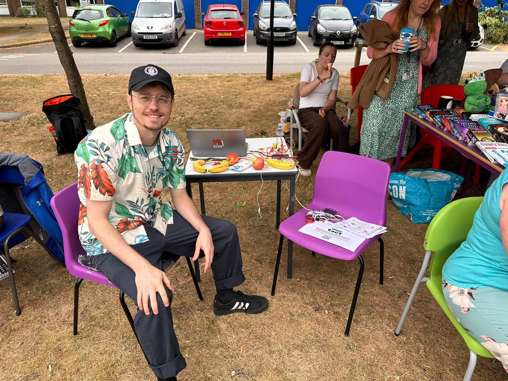
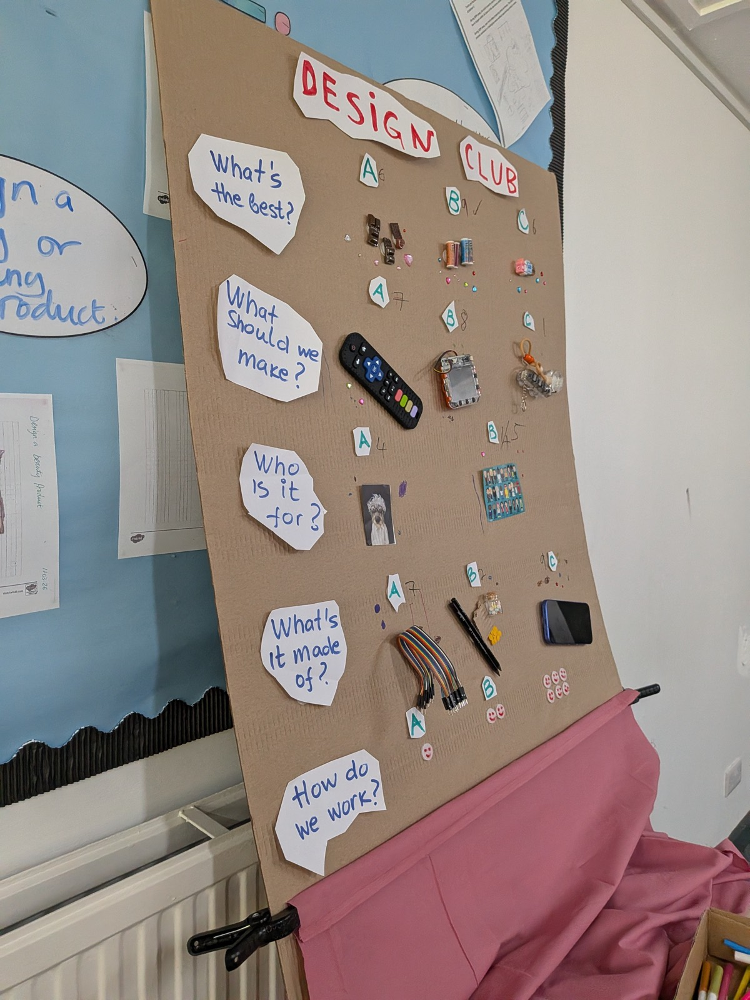
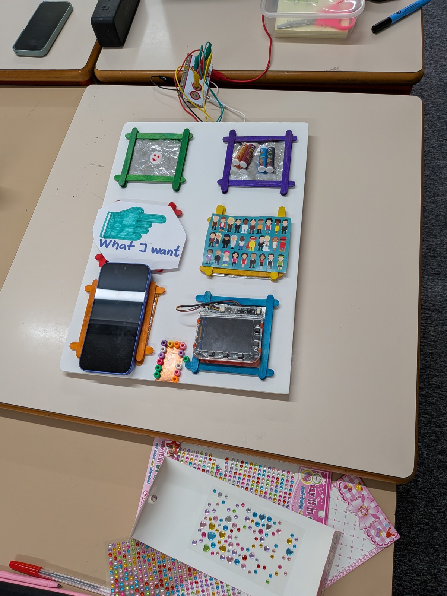

Research
We have an announcement to make: our Design Club begins
A new strand of research takes us into school, exploring communication with children themselves

Following instructions, answering a question, joining a conversation at break time: so much of a school day depends on communication. Speech and Language UK estimates that roughly three children in an average class of 30 have lifelong speech and language difficulties. For these children, having the time, support and opportunities to contribute matters throughout the day.
Our newest strand of research takes us into school to explore these everyday experiences with children themselves. We want to understand how they navigate the places and interactions around them, what helps, and what they would like to change. To give this work a home, we have started a monthly Design Club where we can explore ideas through making, experimenting and trying things together.
We began by asking the children to help shape the club. What should we explore? What would they enjoy making? Which materials and technologies would they like to try? In our first session, children voted on topics, activities and technologies, making decisions that will guide what happens next.
The first session brought plenty of excitement and ideas we had not considered. We are still at the beginning, but the children have already given us a lot to think about and plenty to get started on.


We will keep sharing what we make and learn together.